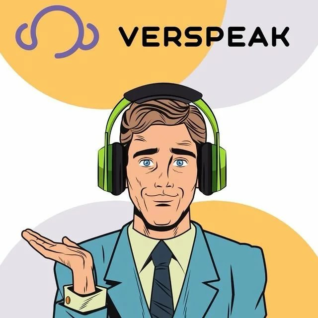
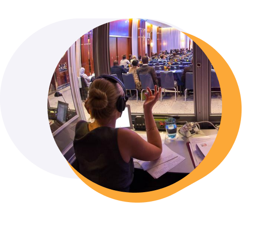
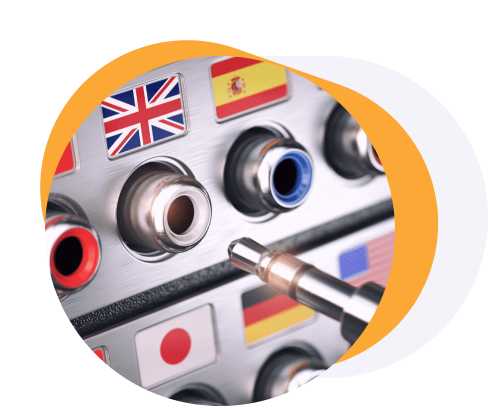
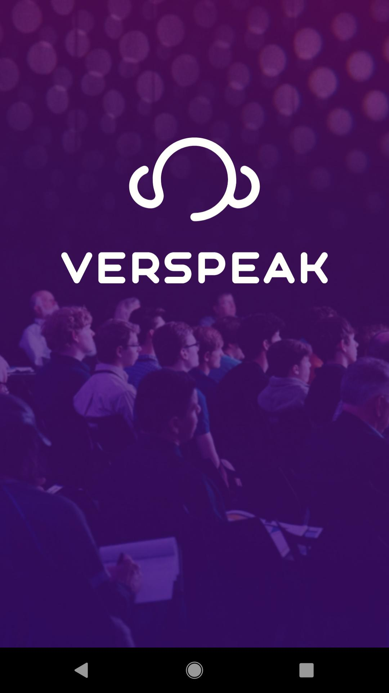

VERSPEAK
VERSPEAK – онлайн-сервис удаленного синхронного перевода для OFFLINE и ONLINE мероприятий с количеством участников от 2 до 50 000 человек. 📌 Вам нужно организовать мультиязычное мероприятие?
ПРЕИМУЩЕСТВА СЕРВИСА
Распределение ролей участников
Рабочие кабинеты (видеоконференции) с разделением ролей.
Вы можете организовывать конференц-связи в компании, удаленные совещания с активными участниками (спикерами) и неактивными слушателями

Синхронный перевод на любой язык
Сервис предоставляет переводчиков (с полностью оборудованной отдельной кабиной) + систему синхронного перевода, позволяющую проводить мультиязычные собрания в режиме видеоконференции

Перевод конференций через транзитный язык
Перевод конференции через транзитный язык (функция RELAY)
Возможность стрима конференции
Возможность стрима на все популярные платформы (YouTube, Facebook, Instagram, Twitch и другие
